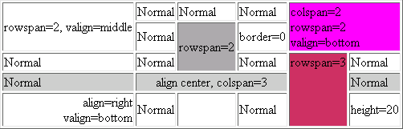

| Attribute | Value | Description |
| border | x | the thick of border table |
| align | left,center,right | Table will be aligned with the current page |
| width, height | integer | the width or the height of this table (in milimet by default) |
| bgcolor | #xxxxxx | Background color of this table in hexadecimal |
| Attribute | Value | Description |
| bgcolor | #xxxxxx | Background color of this row in hexadecimal |
| repeat | If a row has this property, it will be rewrite on each page if the table is broken on many page. A table can have many row repeatly. It's useful for a long table with title and the title will be rewrite on each page. |
| Attribute | Value | Description |
| border | 0,trbl,x | Border can be 0 for a cell with no border. If you want to customise
your cell, use trbl to define: t=0|1=top, r=0|1=right, b=0|1=bottom
and l=0|1=left. Example: - border='1010': Draw only border top and bottom - border='0101': Draw only border left and right - border='1001': Draw only border top and left - border='1': Draw all border 0.1mm - border='2.5': Draw all border 2.5mm |
| align | left,center,right | Text will be align inside the cell in horizontal, defaut is left |
| valign | top,middle,bottom | Text will be align inside the cell in vertical, defaut is middle |
| width, height | integer | the width or the height of this table (in milimet by default) |
| bgcolor | #xxxxxx | Background color of this table in hexadecimal |
| colspan | integer | Table cells can span across more than one column or row. The attributes COLSPAN ("how many across") and ROWSPAN ("how many down") indicate how many columns or rows a cell should take up. |
| rowspan | integer | |
| nowrap | Indicates that text should not wrap in the cell | |
| family | Verdana,Times,..... | Family font |
| style | bold,italic,underline | Style of the font, delimiter=",", without space, case sensitive |
| size | 12,14... | Size of font |
|
<?php $html = <<<MYTABLE <table border="1" align="center"> <tr> <td rowspan="2" valign="middle" border="0">rowspan=2, valign=middle</td> <td>Normal</td> <td>Normal</td> <td>Normal</td> <td colspan="2" rowspan="2" valign="bottom" bgcolor="#FF00FF">colspan=2<br>rowspan=2<br>valign=bottom</td> </tr> <tr> <td height="15">Normal</td> <td rowspan="2" align="right" bgcolor="#aaaaaa" border="0">rowspan=2</td> <td border="0">border=0</td> </tr> <tr> <td>Normal</td> <td>Normal</td> <td>Normal</td> <td rowspan="3" valign="top" bgcolor="#CC3366">rowspan=3</td> <td>Normal</td> </tr> <tr bgcolor="#cccccc"> <td>Normal</td> <td colspan="3" align="center">align center, colspan=3</td> <td>Normal</td> </tr> <tr> <td align="right" valign="bottom">align=right<br>valign=bottom</td> <td>Normal</td> <td> </td> <td>Normal</td> <td height="20">height=20</td> </tr> </table> MYTABLE; define('FPDF_FONTPATH','font/'); require('pdftable.inc.php'); $p = new PDFTable(); $p->AddPage(); $p->setfont('times','',12); $p->htmltable($html); $p->output('','I'); ?> |
| Result in my browser (opera 7.5): | ||||||||||||||||||||||||
|  | ||||||||||||||||||||||||
| Result in your browser: | ||||||||||||||||||||||||
| ||||||||||||||||||||||||
| Result in file pdf: example.pdf (Note: HTML dosen't support border='0' for each <td>) | ||||||||||||||||||||||||